The Stories of Homer — 愤怒的故事 · 归乡的故事
μῆνις καὶ νόστος — ῥαψῳδίαι δύο, ἄνθρωπος εἷς
两部史诗，讲的是同一场战争之后的两件事：《伊利亚特》讲战争第十年里的五十一天——一个英雄的愤怒如何毁掉他自己和无数人；《奥德赛》讲战争结束之后——另一个英雄如何花了十年，把"回家"这件事走成世界上最曲折的路。一个向死，一个向生。
一切始于一场婚礼。佩琉斯与忒提斯（阿喀琉斯的父母）大婚，众神皆被邀请，唯独忘了不和女神厄里斯。她怀恨而来，抛下一只金苹果，上刻"献给最美的女神"。赫拉、雅典娜、阿芙洛狄忒三位女神各不相让，请特洛伊王子帕里斯裁决。
帕里斯把金苹果判给了阿芙洛狄忒——因为她说：把世上最美的女人给你。那个"最美的女人"是斯巴达王后海伦。帕里斯远渡重洋拐走海伦，墨涅拉俄斯召集希腊联军（阿伽门农为统帅），一千艘战船驶向特洛伊。围攻十年，城未破。
《伊利亚特》不写战争的开始——它从第十年写起，从一个愤怒开始。
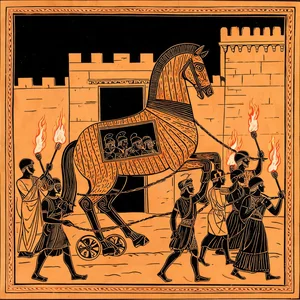
希腊军营爆发瘟疫——阿波罗的箭射了九天九夜。先知卡尔卡斯道出原因：统帅阿伽门农抢了阿波罗祭司的女儿，拒不归还。阿伽门农被迫还人，却恼羞成怒，夺走了阿喀琉斯心爱的战利品布里塞伊斯。
阿喀琉斯拔剑要杀他——雅典娜从身后抓住他的金发，只他一人看见。"收剑。"女神说，"你会得到三倍的补偿。"阿喀琉斯掷杖发誓：希腊人将尝到没有他的苦头。他退回船边，再不参战。他的母亲、海神之女忒提斯上奥林匹斯，抱住宙斯的双膝：让特洛伊人赢，直到他们求阿喀琉斯回来。
"到你们危难之日，当你们的士兵在赫克托尔的屠刀下成片倒下，你们将呼唤阿喀琉斯，而他将不在。"
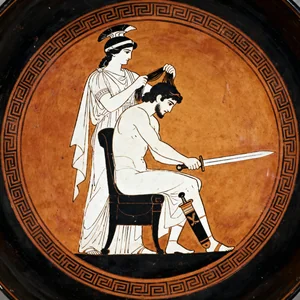
宙斯兑现对忒提斯的承诺，战局逆转。希腊第一勇士狄奥墨得斯杀红了眼，一枪刺伤美神阿芙洛狄忒的手腕，又用巨石砸倒战神阿瑞斯——凡人刺伤神明的疯狂一日。
但特洛伊的赫克托尔是另一番气象。城门口，他抱着幼子告别妻子安德洛玛刻——孩子被父亲头盔上的马鬃吓得大哭，他摘下头盔，把孩子举起来，向诸神祈祷："让他比我更强，让他在某一天被称为'远胜其父的赫克托尔之子'。"然后他转身出城，明知此去难返。
全书最温柔的场面，嵌在战争最残酷的章节里——特洛伊的良心，在告别。
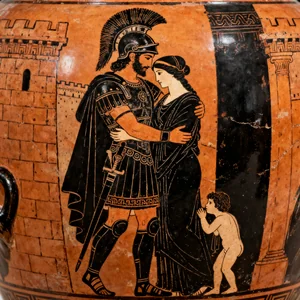
希腊人节节败退，阿伽门农低头了——送来信使：七座三脚鼎、十塔兰同黄金、十二匹赛马、七个美女、归还布里塞伊斯、外加三座城池和一个女儿的婚嫁。阿喀琉斯一一回绝："他的礼物在我眼里一文不值。"
老师父福尼克斯讲了一个寓言：英雄墨勒阿格赌气拒战，火都烧到自家门口才出手，事后什么也没得到。"等你等到火烧船边才出手，也一样。"阿喀琉斯听懂了，只答一句："那就等到那时候。"
夜里，宙斯提起金天平，称量两军的命运——希腊一侧沉下去。赫克托尔势如破竹，战火逼近希腊船队。
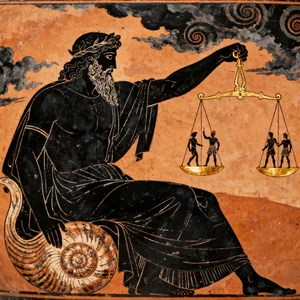
战火烧到船边，阿喀琉斯最好的朋友帕特罗克洛斯哭了——"你父亲不是阿喀琉斯，你的母亲不是忒提斯，你是礁石生的、海水养的，心硬如铁。"阿喀琉斯心软，借出自己的铠甲和军团，再三叮嘱：只把特洛伊人赶离船队，别追到城下，别碰赫克托尔。
帕特罗克洛斯穿上阿喀琉斯的铠甲，特洛伊人望风而逃。他杀红了眼，忘记警告，一路追到特洛伊城下，三次强攻城墙。阿波罗亲手击落他的头盔、折断他的长矛、剥去他的铠甲——长矛脱手的一瞬，欧福耳玻斯从背后刺伤他，赫克托尔补上致命一矛。
临终前他对赫克托尔说："你得意吧——是宙斯和阿波罗赐你胜利。你也会死，死在阿喀琉斯手上，死期不远了。"说完，魂归冥府。
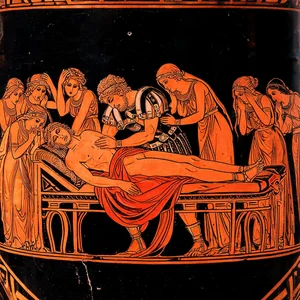
噩耗传来，阿喀琉斯倒在地上，用泥土涂满头发。母亲忒提斯从海里升起，为他求来火神赫淮斯托斯连夜打造的全副铠甲——盾面上刻着大地、天空、海洋，与一座正在歌舞的城市。他重回战场，杀得河水染红，河神亲自上岸与他搏斗。众神也下场混战。
特洛伊城头，老王普里阿摩斯与王后赫卡柏哭求儿子进城避难；赫克托尔听完，决定堂堂正正一战。他绕城跑了三圈，阿喀琉斯紧追不舍——宙斯再次提起金天平，赫克托尔的一端沉向冥府。雅典娜化作他兄弟的模样诱他停步；他掷出长矛，被盾弹回；再要第二支，无人应答——他明白了："诸神骗我赴死。"
阿喀琉斯一矛刺中他唯一裸露的咽喉。倒下前，赫克托尔请求赎回尸体，阿喀琉斯拒绝，在他脚跟上穿洞系上皮带，拖尸绕城。全城哭声震天。
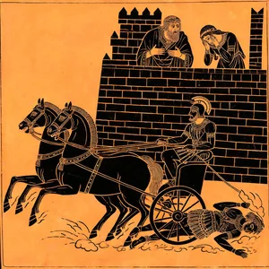
此后十二天，阿喀琉斯每天黎明拖着赫克托尔的尸体绕坟三圈。阿波罗以金盾护尸不损，众神看不下去，宙斯裁决：让忒提斯传话阿喀琉斯接受赎金，让伊里斯传话普里阿摩斯——孤身赴敌营。
白发老王带着赎金，在赫尔墨斯的引领下穿过沉睡的军营，走进阿喀琉斯的帐篷，径直走到他面前——抱住他的膝盖，亲吻那双杀死自己众多儿子的手："想想你自己的父亲吧，神样的阿喀琉斯……我做了世上没人做过的事：把杀死我儿子的手，举到唇边。"
两人对泣：老人哭儿子，英雄哭父亲和挚友。阿喀琉斯洗净赫克托尔的尸体，涂油裹好，避着老人的目光；他承诺停战十二天，让特洛伊人安葬赫克托尔。
史诗以敌人的葬礼作结，不写城陷。全书最后一行："就这样，他们为驯马者赫克托尔举行了葬礼。"
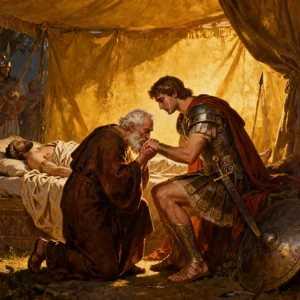
特洛伊陷落十年，奥德修斯仍未归家。伊萨卡的宫殿被一百零八位求婚者占着，日夜宴饮，坐吃山空；他们逼王后佩涅洛佩改嫁。佩涅洛佩以织布为名拖延——白天织公公的寿衣，夜里拆掉，骗了三年。
雅典娜化装成远客，激励年轻的忒勒马科斯：召集公民大会，驱逐求婚者，然后出海——去皮洛斯问涅斯托尔，去斯巴达问墨涅拉俄斯，打听父亲的下落。少年第一次顶撞母亲："言语是男人的事，尤其是我——因为这家由我做主。"次日，他扬帆出海。
子寻父与父归乡，两条线同时出发，终将在伊萨卡汇合。
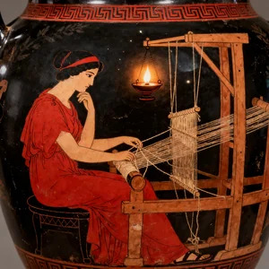
众神决议放行。赫尔墨斯飞越大海，传令仙女卡吕普索放人——她在岛上留了奥德修斯七年，许诺他不死不老，仍留不住他。他每日坐在海边，望着大海哭泣。木筏造好出海，波塞冬掀起风暴，木筏粉碎；他抱着船板漂了两天两夜，在费阿刻斯人的海岸上，赤身裸体地爬上岸。
公主瑙西卡娅正在海边洗衣。她给了他衣物和食物，领他进城。在王宫，费阿刻斯王阿尔喀诺俄斯设宴款待；歌者唱起特洛伊的故事，奥德修斯蒙面而泣。国王问："你是谁？"他开口，讲述十年漂泊——史诗最著名的部分，由此开始。
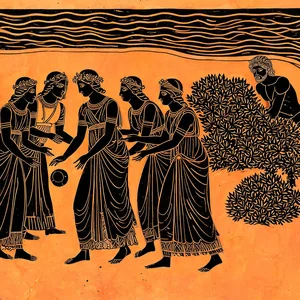
他讲到洗劫伊斯马罗斯城后，贪杯的部下误了船期，被内陆人反杀；讲到食莲人的国度，吃过莲花的人再也不想家——他把他们绑回船上："归乡的第一敌人是遗忘。"
然后是最著名的故事：独眼巨人波吕斐摩斯。巨人连吃他六名部下，用巨石封住洞口。奥德修斯灌醉他，谎称自己叫"无人"，趁醉烧瞎他的独眼——邻居问询，巨人喊："无人杀我！"于是无人来救。他们藏在羊腹下逃出山洞；船离岸后，他忍不住报上真名："我是奥德修斯，拉厄尔忒斯之子！"为了一句荣耀，他把回家的路彻底堵死——波吕斐摩斯是海神波塞冬的儿子，从此整个大海与他为敌。
他讲到风袋、巨人国、女巫喀耳刻，讲到下冥府问先知忒瑞西阿斯，讲到塞壬的歌——他把船员耳朵塞上蜡，把自己绑在桅杆上听；讲到六头怪斯库拉一次叼走六名最好的船员；讲到太阳神牛群——部下趁他睡着宰牛祭祀，牛皮在火上爬行，肉串哞叫。出海之后，宙斯一道雷霆劈碎船只，全军覆没。只有他，抱着桅杆与龙骨的残骸，漂回漩涡，攀住无花果树，像蝙蝠一样悬挂，等漩涡把木筏吐回来。
"我漂泊中最惨不忍睹的一幕"——他这样形容看着六名船员被斯库拉叼走。
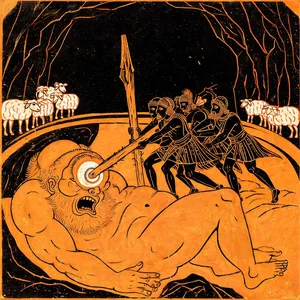
费阿刻斯人用一只快船送他回家。他睡梦中被抬上伊萨卡的海滩——十年漂泊，故乡的沙滩。雅典娜为他施法：变成一个苍老褴褛的乞丐。
他先找到忠实的猪倌欧迈俄斯，编了一个半真半假的克里特故事试探人心；忒勒马科斯从斯巴达归来，雅典娜使父子单独相认——"我是你的父亲。我吃了二十年的苦，才回到这片土地。"少年抱住父亲，放声大哭。他们商定：先让求婚者继续嚣张，等时机成熟，一举清算。
归乡的第一步不是踏进家门，而是先弄清楚：家里还有谁是忠诚的。
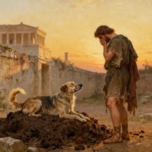
乞丐奥德修斯走进自己的宫殿。求婚者羞辱他、掷凳砸他；他一一忍住。老狗阿尔戈斯躺在粪堆上，听到主人的声音，摇着尾巴死去——二十年，它一直等到今天。
夜里，佩涅洛佩请"陌生人"洗脚。老乳母欧律克勒亚摸到他腿上的野猪伤疤——那是少年时外公家的狩猎留下的。她惊得打翻水盆："你一定是奥德修斯本人！"他掐住她的喉咙，逼她沉默。
佩涅洛佩宣布：谁能拉开奥德修斯的弓、一箭穿过十二柄斧头的柄孔，她就嫁给谁。求婚者轮番上阵，无一人拉得开弓。乞丐接过弓，轻轻一拉，箭矢穿斧而过——大厅里鸦雀无声。
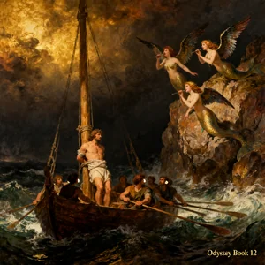
奥德修斯撕去破衣，跃上大厅门槛，第一箭射穿安提诺俄斯的喉咙——他正举着金杯饮酒。"狗们！你们挥霍我的家产、强占我的女仆、在我活着时向我妻子求婚。你们不畏神、不畏人——现在你们都得死。"雅典娜举起神盾，求婚者心胆俱裂；箭尽之后，父子与两个忠仆持矛清场，一个不留。歌者与传令官被赦免——屠杀不是滥杀。
佩涅洛佩被唤醒，却久久不肯相认。她说："有只有我们两人知道的记号。"她命人"把床搬出卧室"——奥德修斯闻言暴怒：那张床，床柱是一棵活的橄榄树，他围着它砌墙建房，没有人搬得动它，除非砍断树根。只有亲手建造它的人知道这个秘密。她泪崩，扑入他怀中。
雅典娜按住黎明，不让太阳升起——神也为这场相认，多留了一夜。
《伊利亚特》里的阿喀琉斯选了不朽之名：他明知自己将死于特洛伊，仍选择留下，换取名字被后人传唱——他永远回不了家。《奥德赛》里的奥德修斯选了回家：他放弃了不朽的机会（卡吕普索许诺他不死不老），忍受一切屈辱与漂泊，只为回到妻子和儿子的身边。
荷马把"怎样活"的完整回答拆成两部史诗：选了荣耀，就没有家；选了家，就得咽下所有委屈。阿喀琉斯死于英雄的活法，奥德修斯活着承受英雄的代价——一个以悲悯收束愤怒，一个以相认完成归乡。合在一起，才是荷马对人世的全部答案。